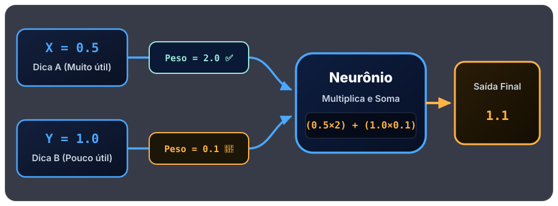
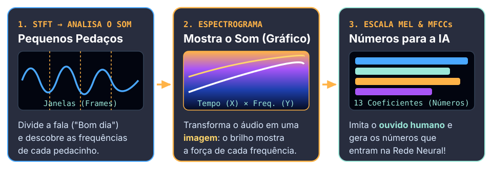
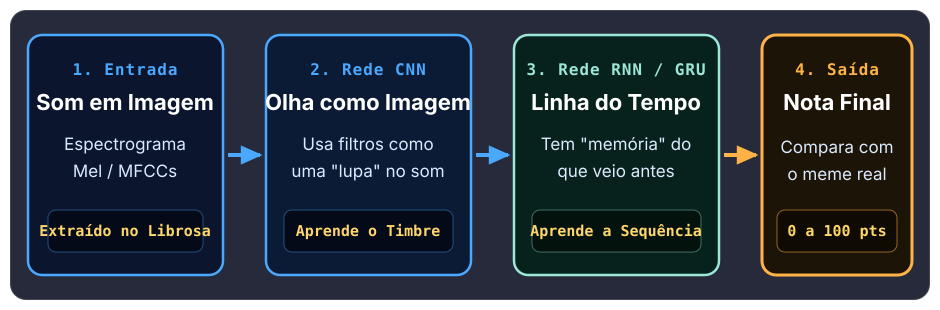
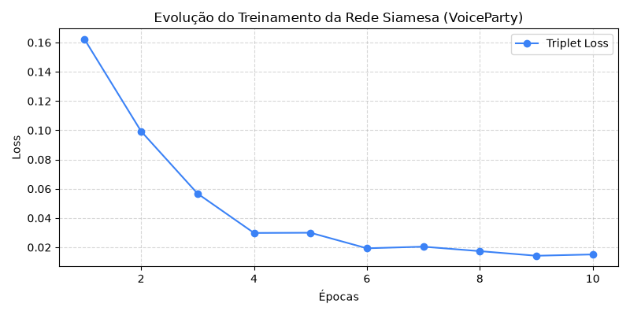

1. STFT → ANALISA O SOM
Pequenos Pedaços
Janelas (Frames)
Divide a fala ("Bom dia") e descobre as frequências de cada pedacinho.
👆 Clique para inspecionar
Da teoria das Redes Neurais Artificiais e dos MFCCs até a demonstração prática do nosso projeto VoiceParty.
O computador não tem "ouvido"! Usamos STFT, Espectrograma e MFCCs para transformar a voz em tabelas de números.
Aprendizado Supervisionado (exemplos com gabarito) e Redes Neurais com neurônios, pesos e camadas.
Nosso jogo com Librosa e Rede Híbrida (CNN + RNN) que ouve sua imitação e dá uma nota de 0 a 100.
Usamos Librosa, MFCCs e uma Rede Híbrida (CNN + RNN) para comparar timbre, entonação e ritmo e gerar uma nota de 0 a 100.
Em vez de programar mil regras fixas, nós mostramos exemplos com a resposta certa (rótulo) para o computador aprender o padrão.
No Aprendizado Supervisionado, é como estudar para uma prova tendo uma lista de exercícios com gabarito:
"Ligar" | 🎤 Áudio 2 ➔ "Desligar"
Na aula vimos a diferença principal entre os dois tipos de aprendizado:
| Característica | Supervisionado ✅ | Não Supervisionado 🔍 |
|---|---|---|
| Tem resposta (rótulo)? | Sim! Tem gabarito | Não tem resposta |
| Como funciona? | Aprende com exemplos certos | Agrupa dados parecidos sozinho |
| Objetivo principal | Prever ou classificar | Descobrir padrões ocultos |
Um modelo inspirado no cérebro humano que conecta pequenos blocos (neurônios) e aprende ajustando seus pesos a cada época.
Cada neurônio recebe números, multiplica pelo Peso (que diz o quanto aquela pista é importante) e soma tudo:

Clique nos 4 passos da aula ou aperte "Treinar +1 Época" para ver o erro cair e a rede aprender:
Clique em cada etapa do fluxo abaixo para inspecionar e animar como a voz vira números para a Rede Neural:

Divide a fala ("Bom dia") e descobre as frequências de cada pedacinho.
Transforma o áudio em uma imagem: o brilho mostra a força de cada frequência.
Imita o ouvido humano e gera os números que entram na Rede Neural!
Como uma frase falada (ex: "Bom dia" ou "Birl!") muda a cada milissegundo, a STFT corta o som em pequenas janelas de tempo para descobrir quais frequências (graves ou agudas) existem em cada pedacinho!
Como gravamos e preparamos os áudios do VoiceParty usando a biblioteca librosa no Python.
Reunimos áudios de referência (memes e frases curtas como "Birl!") e gravamos várias tentativas humanas pelo microfone.
Usamos librosa.load() para transformar qualquer gravação em uma lista de números na mesma taxa (sr = 16000).
Removemos o silêncio do começo e do fim da gravação para comparar apenas o momento exato em que a pessoa falou.
Extraímos as características do som (mfcc e melspectrogram) que servem de entrada para a Rede Neural.
Com poucas linhas de Python, carregamos o áudio e extraímos o Espectrograma e os 13 MFCCs:
import librosa
import numpy as np
# 1. Carregar áudio e remover silêncio (16 kHz)
y, sr = librosa.load("birl_ref.wav", sr=16000)
y_limpo, _ = librosa.effects.trim(y, top_db=25)
# 2. Aplicar STFT e converter para Decibéis (Espectrograma)
espectrograma = np.abs(librosa.stft(y_limpo))
espectrograma_db = librosa.amplitude_to_db(espectrograma, ref=np.max)
# 3. Extrair os 13 coeficientes MFCC (Números para a IA)
mfccs = librosa.feature.mfcc(y=y_limpo, sr=sr, n_mfcc=13)
print("Formato dos MFCCs:", mfccs.shape)
Por que juntamos CNN (que vê a imagem do som) com RNN (que entende a sequência no tempo) e como avaliamos o modelo.

CNN -> RNN -> Nota Final" style="width: 100%; height: auto;">from tensorflow.keras import Sequential, layers
modelo = Sequential([
# 1. CNN: Usa filtros como "lupa" na imagem do som
layers.Conv2D(32, (3, 3), activation='relu', input_shape=(64, 110, 1)),
layers.MaxPooling2D((2, 2)),
# 2. RNN (GRU): Memória para acompanhar o ritmo no tempo
layers.Reshape((55, -1)),
layers.GRU(64),
# 3. Saída: Resultado final
layers.Dense(1, activation='sigmoid')
])
modelo.compile(optimizer='adam', loss='binary_crossentropy', metrics=['accuracy'])
modelo.fit(X_treino, y_treino, epochs=10, validation_data=(X_teste, y_teste))
Separamos os dados em Treino (80%) para a rede estudar e Teste (20%) para avaliar com áudios novos. Medimos duas coisas:

✅ Gráfico Real do VoiceParty: Em 10 épocas de treino, o erro (Loss) caiu de 0.162 para 0.0142!
Clique em cada tipo de rede abaixo para ver como ela enxerga o som e por que combinamos as duas no VoiceParty:
Como vimos nos slides da Prof.ª Kátia, a CNN trata o espectrograma como uma fotografia! Seus filtros passam por cima da imagem reconhecendo se a voz é mais grossa, fina ou rouca.
O que descobrimos nos testes práticos: onde a rede acerta, por que ela erra e o que significa "aprender" para uma máquina.
🎉 Obrigado pela atenção, Professora Kátia e turma! Dúvidas ou quem quer testar o VoiceParty?